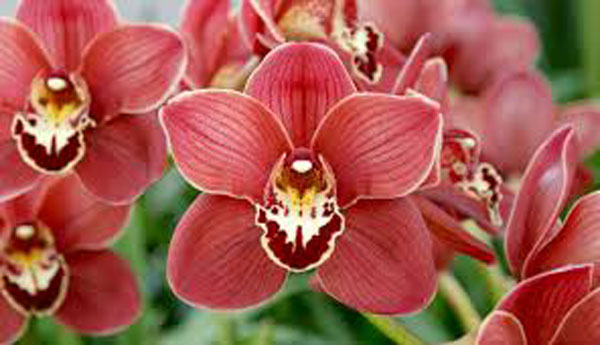

Brasilian Orchid Organisation
No matter if you are a professional or amateur grower, an expert or a beginner, we will always have something to interest you. The Brasilian Orchid Organisation shares the information we have gathered about the history, cultivation and care of many species of orchids. Above all, we try to satisfy your curiosity about these wonderful plants. Although this site emphasizes Brasilian species, it contains general information about orchids from around the world.